Era de Ouro
A Era de Ouro de American Horror Story corresponde às quatro primeiras temporadas da série: Murder House (2011), Asylum (2012), Coven (2013) e Freak Show (2014). Amplamente aclamado pela crítica e pelo público, esse período representa o auge do impacto, da popularidade e da relevância cultural da série, criada por Ryan Murphy e Brad Falchuk.
A fase também se destacou pelo seu elenco, reunindo grandes nomes como Jessica Lange, Kathy Bates e Angela Bassett, além de consolidar talentos que se tornariam marcas da produção, como Sarah Paulson e Evan Peters.
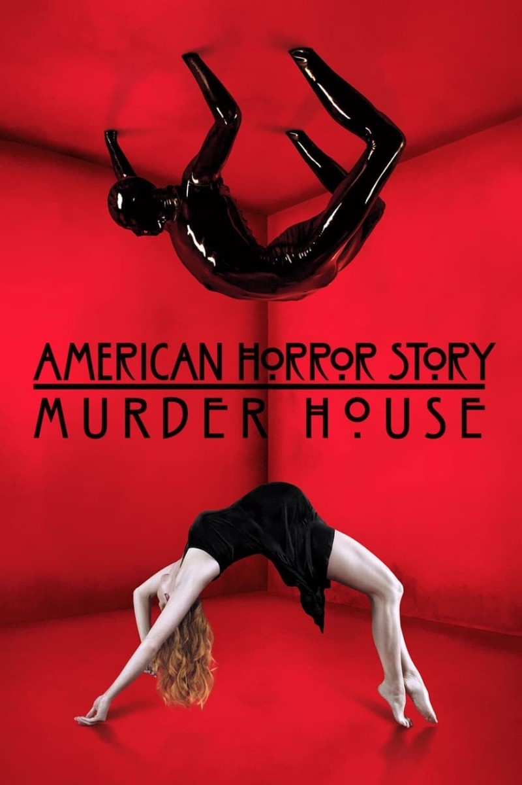
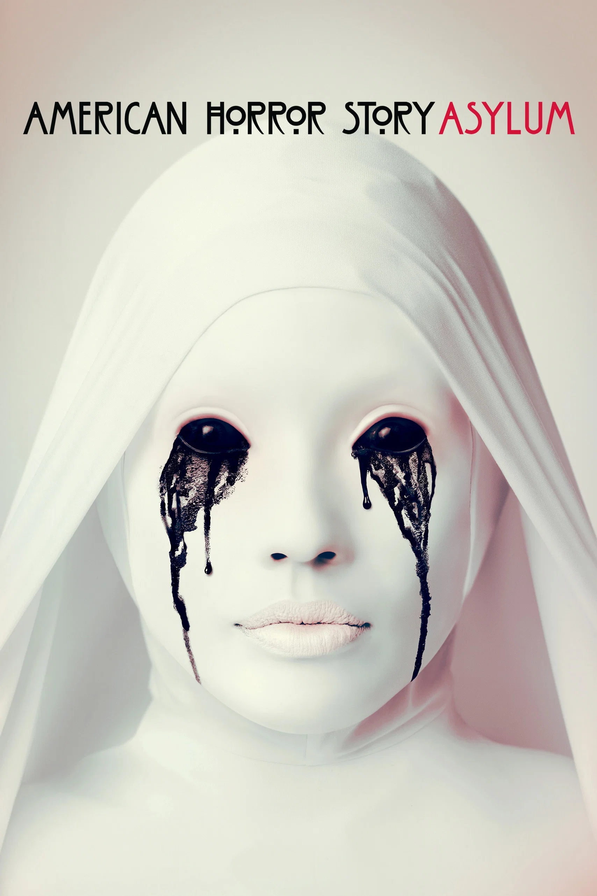
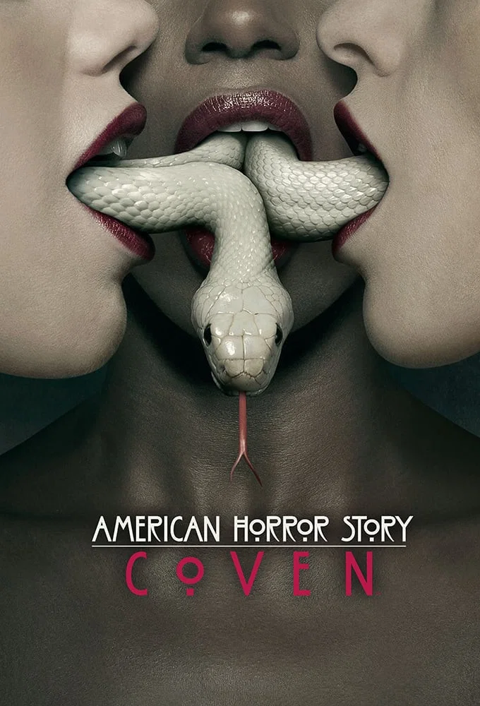
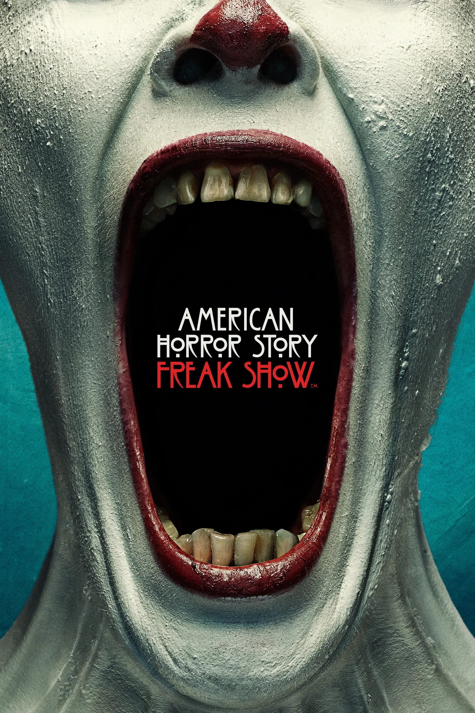
Era de Prata
A Era de Prata marca uma nova fase de American Horror Story, iniciada com Hotel (2015) e seguida por temporadas como Roanoke (2016), Cult (2017) e Apocalypse (2018). Embora a série ainda apresentasse temporadas de grande repercussão e mantivesse seu estilo característico, começou a apresentar uma recepção mais irregular quando comparada ao seu período inicial.
Mesmo com essa leve queda de impacto, a série continuou reunindo grandes nomes, como Lady Gaga, Sarah Paulson, Evan Peters e Kathy Bates, além de explorar novas propostas, cenários e formas de contar suas histórias.
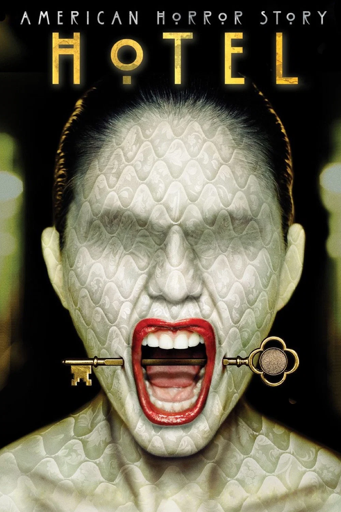
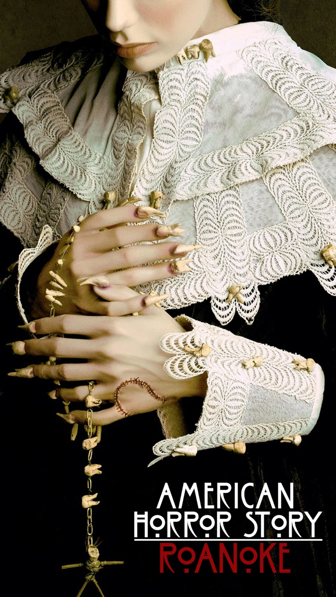
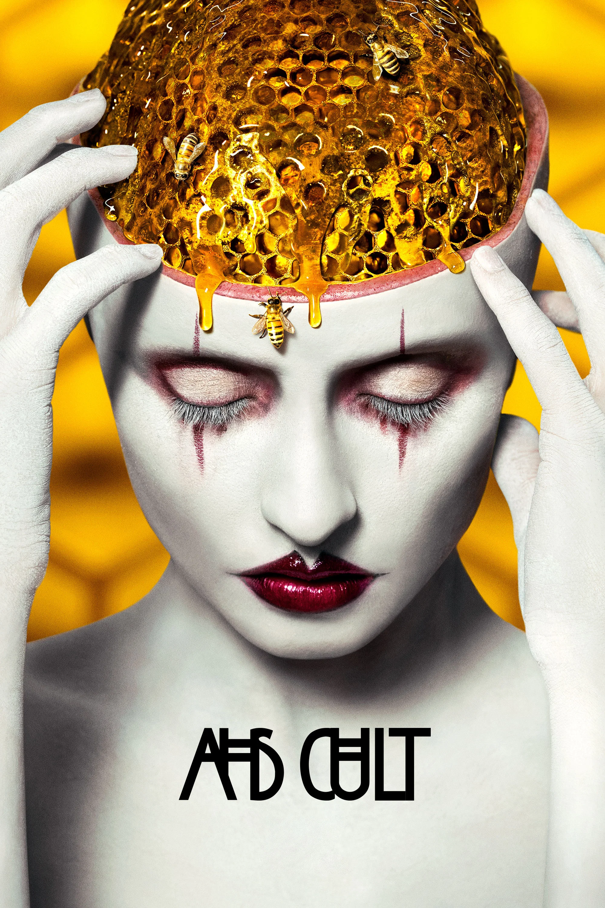
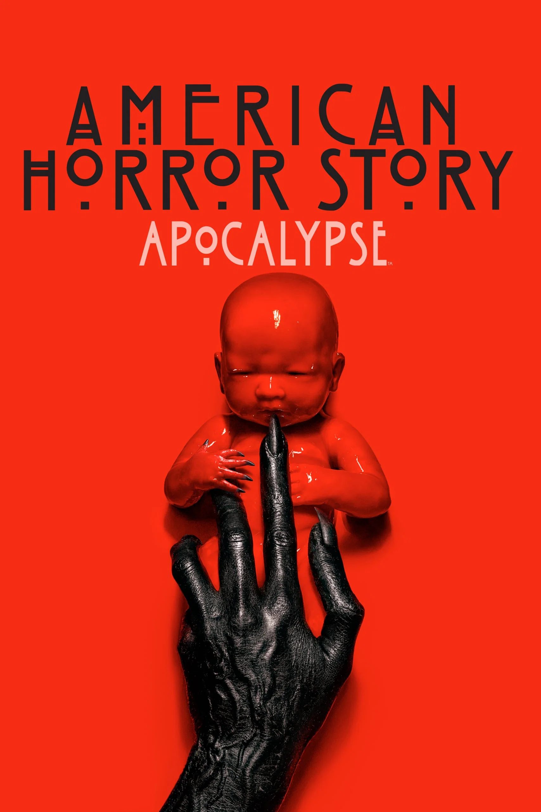
Era de Bronze
A Era de Bronze representa o período mais recente de American Horror Story e também o momento de maior desgaste da série. Com temporadas como 1984 (2019), Double Feature (2021), NYC (2022) e Delicate (2023), a produção passou a enfrentar uma recepção mais dividida entre público e crítica, além de perder parte do impacto que marcou suas primeiras temporadas.
Apesar disso, a série continuou apostando em novos conceitos, elencos e abordagens para suas histórias. Essa fase, portanto, representa um período de altos e baixos, marcado principalmente pela tentativa de recuperar a força e a identidade que fizeram de American Horror Story um fenômeno televisivo.
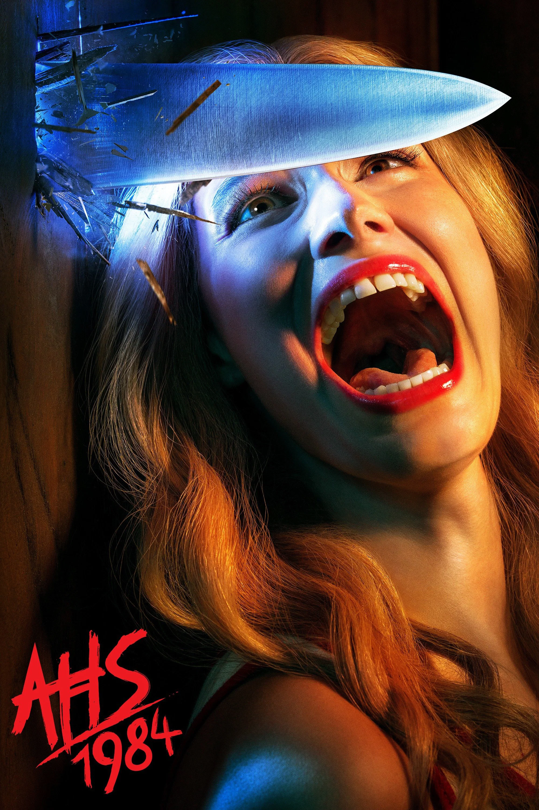
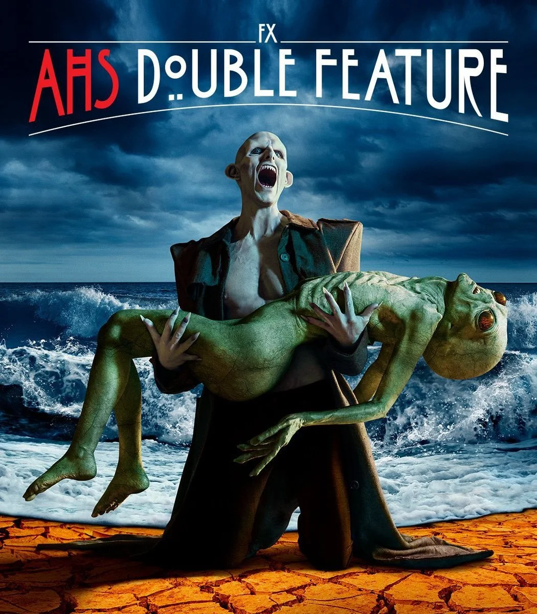
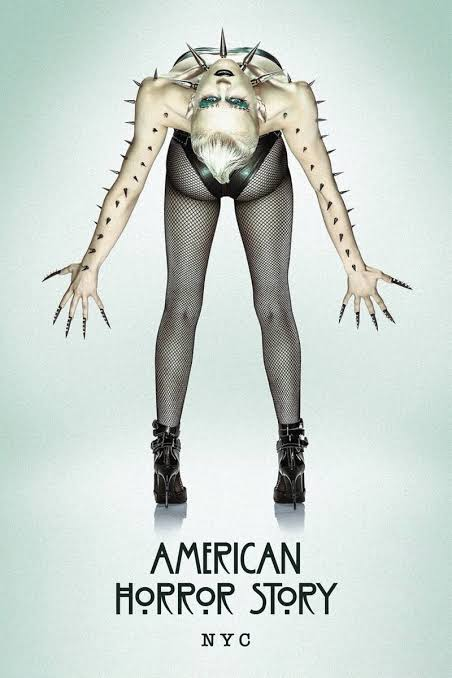
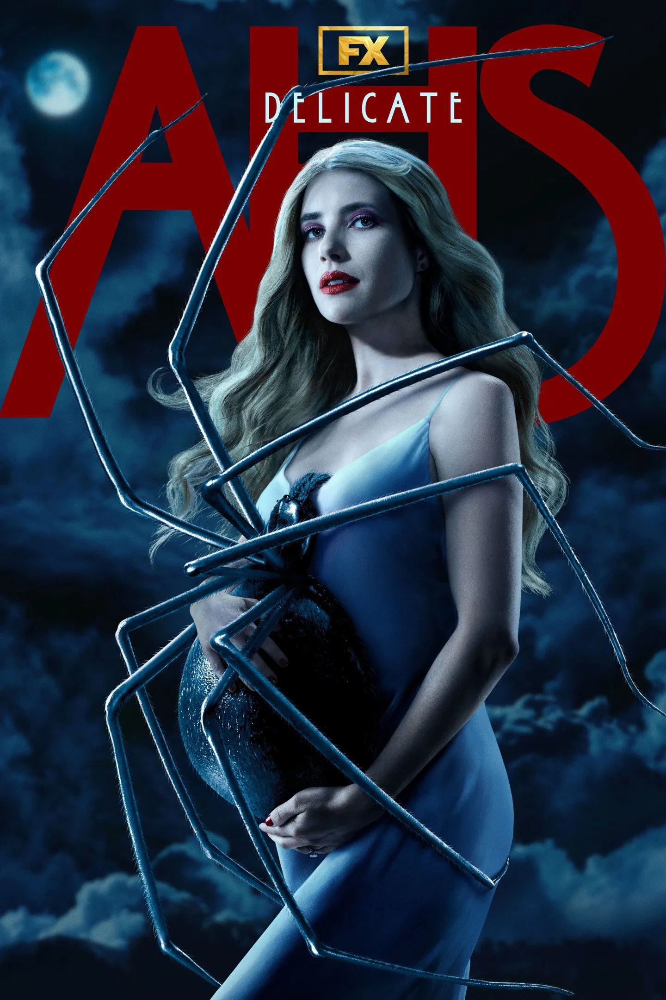